الإعجاز في علم الفلك في القرآن الكريم يظهر في العديد
من الآيات التي تتناول الكون وحركته، مما يتماشى مع بعض الاكتشافات
الحديثة. في هذه النقاط، سنستعرض بعض الأمثلة على ذلك:
نشأة الكون
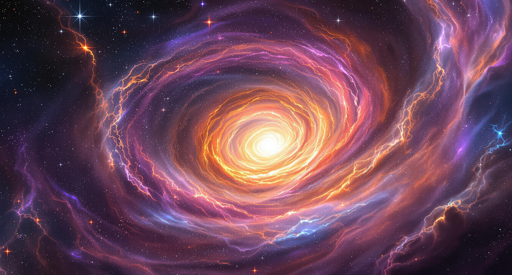
نشأة الكون وتكوينه من المواضيع التي لفتت انتباه
العلماء والمفكرين على مر العصور، و القرآن الكريم من أشار إلى خلق الكون
في عدة آيات. وقد ظهر الإعجاز العلمي في القرآن من خلال إشاراته إلى بعض
الحقائق التي لم تتوصل إليها العلوم الحديثة إلا بعد قرون من نزول القرآن.
نستعرض في هذه الإجابة بإيجاز كيف أشار القرآن الكريم إلى نشأة الكون،
ونقارن ذلك مع بعض النظريات العلمية الحديثة، مدعومًا بمراجع من القرآن
والسنة وأحدث الأبحاث العلمية.
الانفجار العظيم والإشارة القرآنية
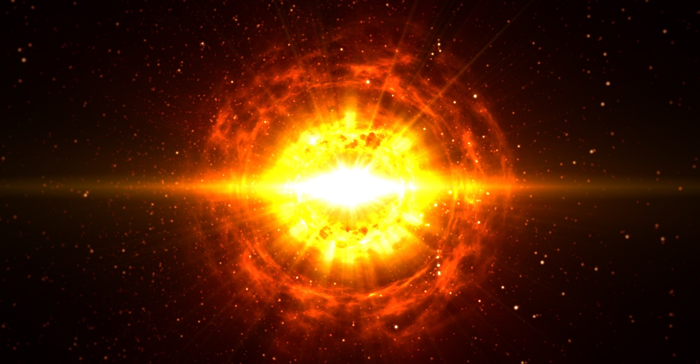
نظرية "الانفجار العظيم" (Big Bang Theory)
هي النظرية الرائدة في علم الكونيات التي تفسر بداية
الكون. تشرح هذه النظرية أن الكون بدأ من نقطة واحدة عالية الكثافة
والحرارة، ثم حدث انفجار هائل، ما أدى إلى توسع الكون، ولا يزال الكون في
توسع حتى يومنا هذا.
في القرآن الكريم، توجد إشارة واضحة في الآية
التالية:
كلمة "رتقًا" تدل على الاتحاد والترابط، وكلمة
"فتقناهما" تشير إلى الانفصال أو التوسع. ويعتبر بعض العلماء أن هذا النص
القرآني يتفق مع فكرة الانفجار العظيم، حيث بدأ الكون من "رتق" (نقطة
واحدة) ثم "فتق" (توسع).
المراجع:
الزنداني، عبد المجيد. "الإعجاز العلمي في القرآن
والسنة".
Steven Weinberg, The First Three Minutes: A Modern View of
the Origin of the Universe.
الدخان الكوني وأصل الكون
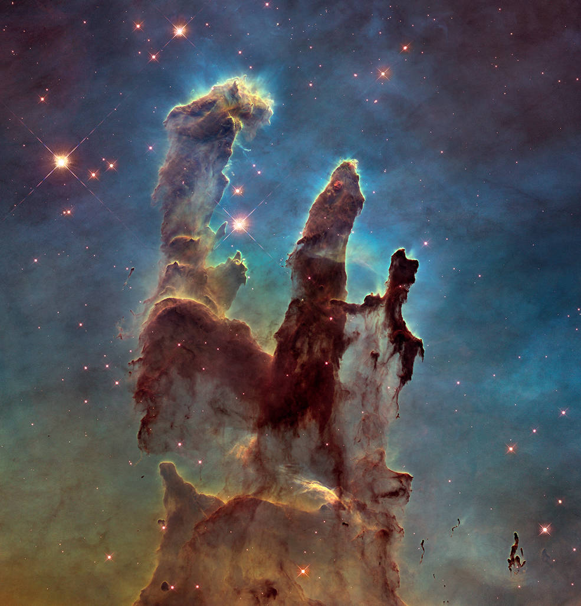
بعد الانفجار العظيم، كان الكون في حالة من "الدخان" أو
السديم (Nebula)، وهي مرحلة تحتوي على غازات
وجسيمات متفرقة في كل أنحاء الكون. وهذا ما يشير إليه القرآن
بقوله:
والمقصود بـ"الأيام" هنا لا يقصد به الأيام بمفهومها
المعروف عند البشر، بل قد تشير إلى مراحل مختلفة من الزمن أو الفترات
الكونية. يشير العلماء إلى أن الكون مر بمراحل متعددة منذ نشأته وحتى تشكل
الأرض والمجرات والكواكب.
وقد اتفق جمهور المفسرين على أن أيام خلق السماوات
والأرض الستة هي ست مراحل , أو وقائع , أو أطوار , أو أحداث كونية متتابعة
, لا يعرف مداها إلا الله تعالى , وأنها لا يمكن أن تكون من أيام الأرض ,
لأن الأرض لم تكن قد خلقت بعد , ولذلك لم توصف أيام خلق السماوات والأرض
بالوصف القرآني مما تعدون الذي جاء في آيات أخري عديدة بمعني اليوم
الأرضي.
وقد تكون ستة أيام من أيام اللَّه التي لا تقاس بمقياس
زماننا.مثلا يستفاد من بعض الآيات القرآنية أنّ يوم القيامة ومحاسبة أعمال
الناس يستغرق خمسين ألف سنة (سورة المعارج الآية 4) .
المراجع:
الطبري، تفسير الطبري، الجزء السابع، تفسير الآية 54 من
سورة الأعراف.
Hugh Ross, A Matter of Days: Resolving a Creation
Controversy.
تشير هذه الآية إلى الدقة المتناهية في خلق الكون، وهي
دقة أقر بها علماء الفيزياء والفلك، حيث إن القوانين الكونية محكمة ودقيقة
بحيث تحفظ التوازن الكوني.
المراجع:
مصطفى محمود، رحلة إلى
الأعماق.
Paul Davies, The Goldilocks Enigma: Why Is the Universe Just
Right for Life?
الخلاصة
تشير عدة آيات في القرآن إلى حقائق علمية تتعلق بنشأة
الكون وتطوره، وهذه الحقائق لم يتوصل إليها العلماء إلا في العصر الحديث،
مما يعزز من إعجاز القرآن العلمي. ويعتبر هذا الأمر من الدلائل التي تشير
إلى سبق القرآن في الإشارة إلى نشأة الكون بطريقة تتفق مع بعض الاكتشافات
العلمية المعاصرة.
.اتساع الكون
التوسع المستمر للكون
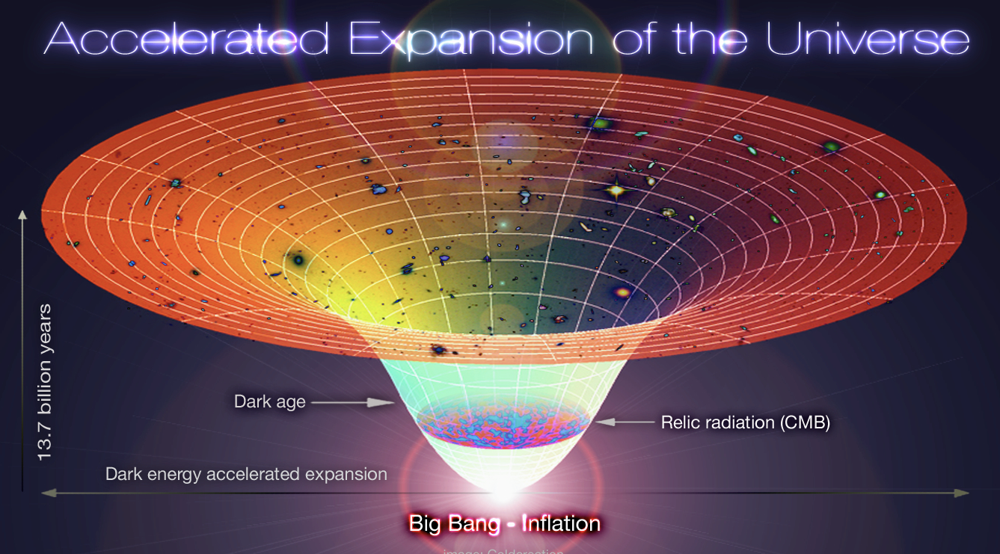
اكتشف العلماء في القرن العشرين أن الكون في حالة توسع
دائم، وهي حقيقة أثبتها الفلكي إدوين هابل عام 1929. هذه الحقيقة تتوافق مع
ما ورد في القرآن الكريم:
لفظ "لموسعون" يدل على الاستمرارية في التوسيع، وهذا
يعكس مفهوم التوسع المستمر للكون كما توصل إليه العلماء بعد نزول القرآن
بقرون. ويعتبر هذا الأمر دليلاً على الإعجاز العلمي في القرآن.
المراجع:
هابل، إدوين. "ملاحظات حول توسع الكون"، مجلة العلوم الفلكية.
كلمة "لموسعون" تُشير إلى عملية التوسيع المستمر، وتُعدّ
هذه الآية واحدة من الإشارات القرآنية التي تتوافق مع ما أثبته العلم
الحديث من توسع الكون. العديد من المفسرين، كالإمام الطبري، رأوا أن كلمة
"لموسعون" تدل على القوة والطاقة التي بُني بها الكون، بينما يربط المفسرون
المعاصرون بين الآية وما كشفه العلم.
المراجع:
تفسير الطبري (الجزء الثاني والعشرين، تفسير الآية
47 من سورة الذاريات).
الزنداني، عبد المجيد. الإعجاز العلمي في القرآن والسنة).يشرح الزنداني الربط بين الآيات القرآنية والاكتشافات العلمية
الحديثة.(
اكتشاف توسع الكون (إدوين
هابل):
في عام 1929، اكتشف العالم الفلكي إدوين هابل أن
المجرات تتباعد عن بعضها البعض، مما يعني أن الكون في حالة توسع. وجد هابل
أن الضوء القادم من المجرات يظهر انزياحًا نحو اللون الأحمر، وهو ما يُعرف
بظاهرة الانزياح نحو الأحمر. هذه الظاهرة تشير إلى
أن المجرات تبتعد عنا، وكلما كانت المجرة أبعد، زادت سرعة ابتعادها، مما
يدعم نظرية توسع الكون.
الانزياح نحو الأحمر والتوسع المستمر
للكون:
ظاهرة الانزياح نحو الأحمر التي لاحظها هابل ترتبط
بمبدأ دوبلر، حيث أن الأطياف الضوئية للمجرات البعيدة تظهر منحرفة نحو
الطرف الأحمر من الطيف كلما ابتعدت المجرات. هذا الانزياح يعزز الفكرة بأن
الكون ليس ثابتًا، بل في حالة تمدد مستمرة. وقد أصبحت هذه الظاهرة من أسس
علم الكونيات الحديث، ومكّنت العلماء من قياس توسع الكون بدقة.
المراجع:
)Hubble, Edwin. The Realm of the Nebulae. Yale
University Press, 1936. يتناول كتاب هابل اكتشافاته حول
تباعد المجرات ودليل توسع الكون.(
)Singh, Simon. Big Bang: The Origin of the Universe.
Harper Perennial, 2004. يشرح هذا الكتاب النظرية ويقدم
تاريخيًا موجزًا لاكتشاف توسع الكون(.
)Hawking, Stephen. A Brief History of Time. Bantam
Books, 1988.يوضح هوكينغ ظاهرة الانزياح نحو الأحمر وكيف
ساعدت في إثبات توسع الكون (.
)Greene, Brian. The Fabric of the Cosmos. Vintage, 2005.
يشرح غرين بأسلوب مبسط تأثيرات توسع الكون على الفيزياء
والزمان والمكان(.
التوافق بين القرآن والعلم في موضوع اتساع
الكون:
يرى بعض العلماء في النص القرآني "وَإِنَّا لَمُوسِعُونَ" إشارة
إلى توسع الكون الذي توصل إليه العلم في العصر الحديث. هذا التطابق بين
النص القرآني والاكتشاف العلمي يعدّه علماء الإعجاز العلمي دليلًا على سبق
القرآن إلى الإشارة إلى هذه الظاهرة الكونية.
المراجع:
زغلول النجار،. السماء
والدخان الكوني: إعجاز علمي في القرآن الكريم. مكتبة الشروق الدولية، 2001. (يناقش د. زغلول النجار موضوع توسع
الكون ويُبين توافق الآيات القرآنية مع الاكتشافات
العلمية).
)Yahya, Harun. The Creation of the Universe. Global
Publishing, 2001. يقدم الكتاب منظورًا حول الإعجاز العلمي
في الإسلام ويشمل تحليل توسع الكون في القرآن(.
نظرية الانفجار العظيم واتساع
الكون:
ترتبط نظرية الانفجار العظيم بتوسع الكون، حيث تشير إلى
أن الكون بدأ من نقطة واحدة كثيفة وشديدة الحرارة، ثم بدأ بالتوسع بسرعة
كبيرة. هذه النظرية تدعم فكرة أن الكون يتسع، وتشرح أصل الكون منذ اللحظات
الأولى. ويعتبر توسع الكون المستمر امتدادًا طبيعيًا لنظرية الانفجار
العظيم.
المراجع:
)Silk, Joseph. The Big Bang. W.H. Freeman and Company,
2001. يقدم هذا الكتاب تفصيلًا حول نظرية الانفجار العظيم
ويدعمها ببيانات علمية حول توسع الكون.(
)Ross, Hugh. The Creator and the Cosmos. NavPress, 1993.
يوضح الكتاب كيف تتوافق بعض الحقائق الكونية مع الإشارات
في الكتب السماوية، بما في ذلك توسع الكون(.
الخاتمة
اتساع الكون من الحقائق العلمية التي توافقت مع إشارات
القرآن الكريم، مما دفع علماء الإعجاز العلمي إلى اعتبار هذا التوافق دليلاً
على سبق القرآن للعلوم الحديثة. هذه الحقيقة العلمية، التي اكتُشفت حديثًا،
تضيف بعدًا جديدًا للتأمل والتفكر في النصوص القرآنية.
وصف مدارات الأجرام السماوية والليل
والنهار
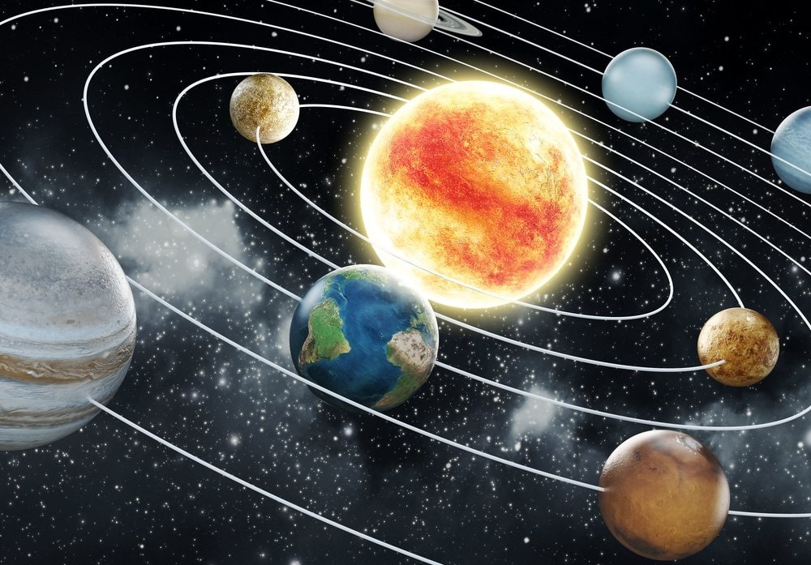
القرآن الكريم يحتوي على العديد من الآيات التي تشير إلى الأجرام
السماوية وحركتها في الكون. هذه الآيات تتحدث عن الشمس والقمر والنجوم
والكواكب، وتصف حركتها بشكل يعكس النظام والدقة. إليك بعض النقاط التي
تتعلق بوصف مدار الأجرام السماوية في القرآن
أ- القمر
[ سورة
يس: 39] يقول الله تعالى في سورة يس ﴿ وَالْقَمَرَ
قَدَّرْنَاهُ مَنَازِلَ حَتَّىٰ عَادَ كَالْعُرْجُونِ الْقَدِيم ﴾
حسب كتاب التفسير الميسر "القمرَ آية في خلقه، قدَّره الله منازل كل
ليلة، يبدأ هلالا ضئيلا حتى يكمل قمرًا مستديرًا، ثم يرجع ضئيلا مثل عِذْق
النخلة المتقوس في الرقة والانحناء والصفرة؛ لقدمه"
ب-الشمس
﴿ وَالشَّمْسُ تَجْرِي لِمُسْتَقَرٍّ لَّهَا ۚ ذَٰلِكَ تَقْدِيرُ الْعَزِيزِ
الْعَلِيمِ﴾ [ سورة يس: 38]
حسب تفسير السعدي "وَالشَّمْسُ تَجْرِي لِمُسْتَقَرٍّ لَهَا [أي: دائما تجري
لمستقر لها] قدره اللّه لها، لا تتعداه، ولا تقصر عنه، وليس لها تصرف في
نفسها، ولا استعصاء على قدرة اللّه تعالى.
ذَلِكَ تَقْدِيرُ الْعَزِيزِ الذي بعزته دبر هذه المخلوقات العظيمة،
بأكمل تدبير، وأحسن نظام.
الْعَلِيمُ الذي بعلمه، جعلها مصالح لعباده، ومنافع في دينهم
ودنياهم".
حسب تفسير البغوي :" يجرون ويسيرون بسرعة كالسابح في
الماء ، وإنما قال : ( يسبحون ) ولم يقل يسبح على ما يقال لما لا يعقل ،
لأنه ذكر عنها فعل العقلاء من الجري والسبح ، فذكر على ما يعقل
.
والفلك : مدار النجوم الذي يضمها ، والفلك في كلام
العرب : كل شيء مستدير ، وجمعه أفلاك
وقال بعضهم : الفلك السماء الذي فيه ذلك الكوكب ، فكل
كوكب يجري في السماء الذي قدر فيه ، وهو معنى قول قتادة .
وقال الكلبي الفلك استدارة السماء" .
توضح هذه الآية أن كل من الشمس والقمر يتحركان في
مدارات محددة مسبقا.
") وآية لهم( تدل على قدرت الله ، ) الليل نسلخ( ننزع ونكشط) منه النهار فإذا هم مظلمون) داخلون في الظلمة ، ومعناه : نذهب
النهار ونجيء بالليل ، وذلك أن الأصل هي الظلمة والنهار داخل عليها فإذا
غربت الشمس سلخ النهار من الليل فتظهر الظلمة" .
أي ان الأصل هي المادة السوداء التي تملأ الكون بينما
النهار هو قشرة خارجية يمكن نزعها كل ليلة
كلمة "نسلخ":
أصل الكلمة من "سَلَخَ" بمعنى نزع الشيء وإزالته
برفق.
في اللغة العربية، السلخ هو إزالة الجلد عن
الحيوان.
المراجع اللغوية:
لسان العرب لابن منظور
معجم مقاييس اللغة لابن فارس
المفردات في غريب القرآن للراغب
الأصفهاني
التفسير التقليدي:
آراء المفسرين:
قال الطبري: "نزيل النهار
من الليل كما يُسلخ الجلد عن الشاة."
قال ابن كثير: "يذهب ضياء
النهار فيعقبه ظلام الليل."
التعبير القرآني:
استخدام كلمة "نسلخ":
تشير إلى عملية تدريجية وليست
فجائية
تصف انفصال الضوء عن الظلام بشكل
متتابع
تماثل حركة خط الغسق (terminator line)
على سطح الأرض
الحقائق العلمية المتوافقة:
الأرض تدور حول محورها كل 24 ساعة
خط الفاصل بين الليل والنهار يتحرك
تدريجياً
منطقة الشفق (twilight) تظهر التدرج في الانتقال
المراجع العلمية:
"Earth's Rotation and Its Effects" (NASA Earth Science)
"The Physics of Twilight" (American Journal of Physics)
"Understanding Earth" (Grotzinger & Jordan)
التطابق العلمي:
أ. ظاهرة خط الغسق:
خط يفصل بين المنطقة المضيئة والمظلمة على سطح
الأرض
في اللغة: "الخُنَّس" تعني الأشياء التي تختفي أو
تتوارى.
التفسير التقليدي: قيل إنها تشير إلى الكواكب التي
تُرى أحيانًا وتختفي أحيانًا أخرى بسبب دورانها في أفلاكها.
التفسير العلمي: يمكن أن تشير إلى الظواهر الفلكية
الحديثة مثل الثقوب السوداء، والتي لا تُرى مباشرة لأنها لا تسمح للضوء
بالهرب منها.
الجوار
في اللغة: "الجوار" تعني التي تجري
وتسير.
التفسير التقليدي: الكواكب التي تجري في
أفلاكها.
التفسير العلمي: يشير إلى الحركة المستمرة للأجرام
السماوية في الفضاء.
الكُنَّس
في اللغة: "الكُنَّس" تعني التي تكنس أو تنظف، ويقال
أيضًا عن الظباء التي تدخل إلى كناسها (مكان اختبائها).
التفسير التقليدي للآية
قال المفسرون القدامى إن هذه الآية تشير إلى
الكواكب السيارة التي تظهر أحيانًا وتختفي أحيانًا أخرى، وتجري في أفلاكها
بمسار دقيق.
الإعجاز العلمي المحتمل
الثقوب السوداء
تُعرف الثقوب السوداء بأنها أجرام سماوية ذات كثافة
هائلة، لا تُرى بالعين المجردة لأن الضوء لا يمكن أن يفلت
منها.
وُصفها بـ"الخُنَّس" لأنها لا تظهر مباشرة، و"الجوار"
لأنها تتحرك في الفضاء، و"الكُنَّس" لأنها تبتلع كل ما يقترب منها، كأنها تكنس
المادة والطاقة.
التعريف العلمي للثقب الأسود: أحد أجرام السماء التي
تتميز بكثافتها الفائقة وجاذبيتها الشديدة بحيث لا يمكن للمادة ولا لمختلف
صور الطاقة "ومنها الضوء" أن تفلت من أسرها ويحد الثقب الأسود سطح يعرف
باسم أفق الحدث وكل ما يسقط داخل هذا الأفق لا يمكنه الخروج منه، أو إرسال
أية إشارة عبر حدوده
الدقة العلمية للآية
وصف الظواهر الكونية بهذه الصفات الثلاث (الخُنَّس،
الجوار، الكُنَّس) يبدو متوافقًا مع وصف الثقوب السوداء الذي توصل إليه العلم
الحديث، رغم أن القرآن نزل قبل 1400 عام.
المراجع
كتب التفسير التقليدية
تفسير ابن كثير: تناول المعنى
اللغوي والتفسيري المرتبط بالكواكب.
تفسير الطبري: شرح الألفاظ بناءً
على فهم العرب للأجرام السماوية.
القرطبي: ربط بين الآيات
والمعاني الكونية التي عرفها الناس في ذلك الوقت.
المراجع العلمية الحديثة
الدراسات التي تناولت الثقوب السوداء مثل كتابات ستيفن
هوكينغ.
مقالات علمية في علم الفلك تشير إلى "الثقوب السوداء"
وخصائصها.
النجم الطارق
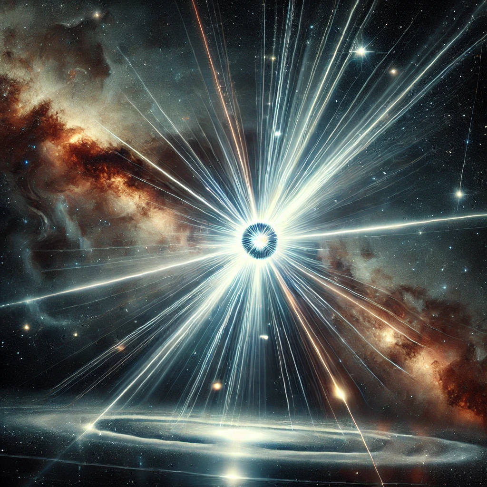
أقسم الله تعالى بنجوم عظيمة فقال ﴿وَالسَّمَاءِوَالطَّارِقِ ١ وَمَا أَدْرَاكَ مَا الطَّارِقُ ٢ النَّجْمُ الثَّاقِبُ ٣﴾] الطارق: [1–3 ويُعتقد أنها النجوم النابضة بالإنجليزية pulsating) : (star
لأنها تصدر أصواتًا مثل صوت الطرق. و يؤكد علماء وكالة ناسا أن هذه النجوم تصدر أصوات نبض أو خفقان.
فهناك النجم النيوتروني neutron star ويسمى
بالنابض pulsar الذي هو بقايا الشموس الهائلة الحجم )الأكبر من شمسنا ،(ذات كثافة عالية في مرحلة فنائها فتدور بسرعة فائقة. إنَّ هذا النجم النابض هو عبارة عن النواة المركزة للنجم الفاني، أثناء مرحلة المستعر الأعظم (supernova) وهو انفجار الطبقات الخارجية للنجم. إنَّه يبث إشعاعاً كهرومغناطيسياً يستمر حتى وقت موته النهائي death time بعد 10-100 مليون سنة، وهو يبث هذه الإشعاعات على استقامة محوره المغناطيسي الناتج عن دورانه وهو ليس محور دورانه نفسه، مما يؤدي إلى رؤية الإشعاع مرة واحدة في كل دورة من دورات هذا النجم، ويعطي الخاصية النبضية لهذا النجم، ويحدث صوتاً بسبب الموجات التضاغطية التي يحدثها في الفضاء. كما إنَّ هذا الإشعاع له قابلية إذابة أيّ جسم كونيّ يقع في مساره، فهو أيضاً ثاقب. يؤكد البروفسور Richard Rothschild من
جامعة كاليفورنيا أن النجوم النابضة تنتج عن انفجارات النجوم وتبث كميات هائلة من الإشعاعات التي تعتبر الأشد لمعاناً وهي تعمل مثل المطرقة التي تدق، فيقول» هذا الانفجار كان شبيهاً بضرب نجم نيوتروني بمطرقة عملاقة وهذا ما يجعل النجم يدق مثل الجرس. «ويؤكد هذا الباحث أن الضوء الصادر عن مثل هذه الانفجارات عظيم جداً فقد بث هذا النجم خلال عشر ثانية ما تبثه الشمس خلال 150000 سنة من الضوء.
.التناسب بين التعبير القرآني والاكتشاف
العلمي:
التعبير القرآني "وَمَا أَدْرَاكَ مَا الطَّارِقُ" يحمل دلالة
على أن الطارق شيء عجيب وخارج عن المألوف، وهو ما ينطبق على النجوم النابضة
والثقوب السوداء، التي تُعد من أعجب ما اكتشفه الإنسان في
الكون.
حقائق علمية تدعم الإعجاز:
النجوم النابضة تكتشف باستخدام تلسكوبات الراديو،
حيث تبث نبضات منتظمة.
الثقوب السوداء تؤثر على الضوء والمادة من حولها
بطريقة يمكن وصفها بأنها "ثاقبة" للفضاء.
المراجع:
كتب التفسير
التقليدية:
تفسير ابن كثير: يشير إلى أن الطارق قد يكون نجمًا
معروفًا يظهر في الليل.
تفسير الطبري: يتحدث عن الطارق كأي نجم
مضيء.
المصادر العلمية:
دراسات حول النجوم النيوترونية والثقوب
السوداء.
تسجيلات الإشارات الصادرة عن النجوم
النابضة.
المشرقين و المغربين
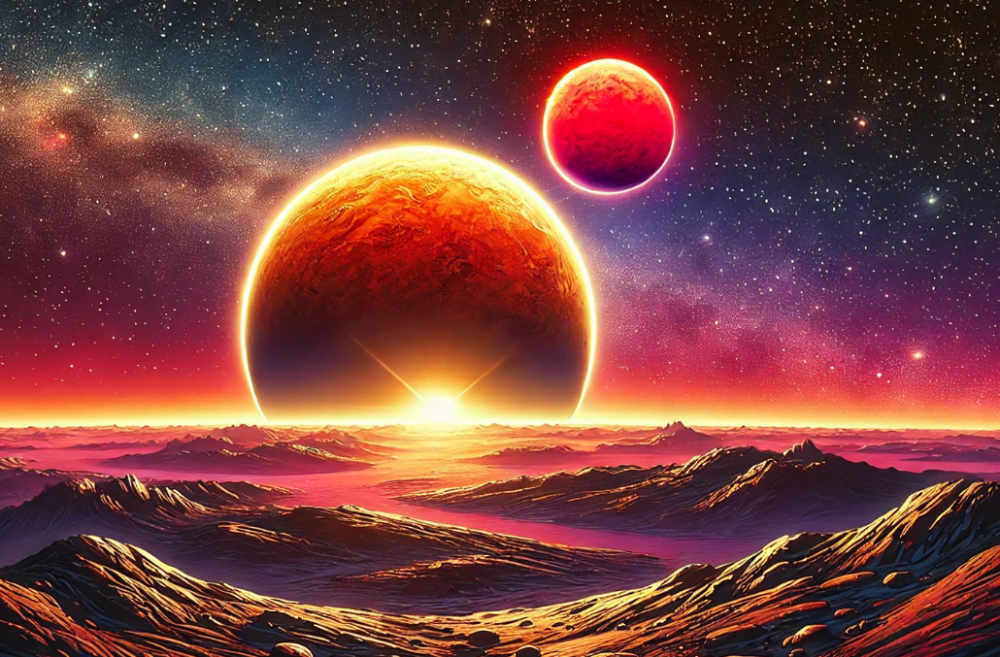
يقول الله تعالى"رب المشرقين ورب
المغربين" سورة الرحمن (آية 17)
هناك أنظمة كوكبية في الكون فيها أكثر من شروق وغروب
للشمس في اليوم، خاصة في الأنظمة الثنائية أو المتعددة الشموس.
أنظمة ثنائية ومتعددة
أنظمة ثنائية
في نظام ثنائي، تدور نجمتان حول بعضهما. إذا دار كوكب
حول هذا النظام الثنائي، فقد يشهد شروقين وغروبين للشمس في
اليوم.
إذا تم تأثير الكوكب بالمد والجزر مع النظام الثنائي،
فسيظهر دائمًا نفس الوجه نحو نظام النجوم . التأثير المدي هذا يعني أن
النجمتين تشرقان وتغربان معًا، مما يخلق تناوبًا بين الضوء
والظلام.
إذا دار الكوكب حول مركز كتلة النظام الثنائي مدار
دائري حول النظام الثنائي فقد يشهد تغيرات في الإضاءة بسبب النجمتين. كل
نجم يشرق ويغرب بشكل منفصل، مما يخلق شروقين وغروبين للشمس في
اليوم
(Circumbinary Orbit)
أنظمة متعددة*
في الأنظمة المتعددة، يكون هناك أكثر من نجمتين. قد
يشهد الكوكب في مثل هذا النظام عدة شروقات وغروبات للشمس في اليوم، اعتمادًا
على تكوين النجوم ومدار الكوكب.
أمثلة على الأنظمة الثنائية
كيبلر-16Kepler-16
كيبلر-16 هو نظام ثنائي من النجوم مع كوكب، كيبلر-16ب،
في مدار دائري حول النظام الثنائي. إذا كان كيبلر-16ب قابلاً للسكن وتم
تأثيره بالمد والجزر مع النظام الثنائي، فسيشهد شروقين وغروبين للشمس في
اليوم.
ألفا سنتوريAlpha
Centauri
ألفا سنتوري هو نظام ثنائي يتكون من نجمتين، ألفا
سنتوري أ وألفا سنتوري ب. إذا دار كوكب افتراضي حول هذا النظام، فقد يشهد
أيضًا شروقين وغروبين للشمس في اليوم.
أمثلة على الأنظمة
المتعددة
HD188753
هو نظام نجمي متعدد يتكون من ثلاثة نجوم. الكوكب هي دي
188753 أب يدور حول هذا النظام. إذا تم تأثير هذا الكوكب بالمد والجزر مع
النظام النجمي، فقد يشهد عدة شروقات وغروبات للشمس في اليوم، اعتمادًا على
تكوين النجوم
نو سكوربيNu Scorpii
نو سكوربي هو مثال آخر لنظام نجمي متعدد. يتكون هذا
النظام من خمسة نجوم. قد يشهد الكوكب الافتراضي في هذا النظام عدة شروقات
وغروبات للشمس في اليوم، اعتمادًا على تكوين النجوم ومدار
الكوكب.
الأنظمة الثنائية والمتعددة يمكن أن تخلق ظروفًا حيث
يشهد الكوكب عدة شروقات وغروبات للشمس في اليوم. هذا بسبب تكوين النجوم
ومدار الكوكب حول النظام النجمي. هذه الظروف الفريدة يمكن أن يكون لها
تأثيرات مثيرة للاهتمام على الحياة المحتملة على هذه الكواكب، خاصةً فيما
يتعلق بدورات الضوء والظلام.
المصادر العلمية
كتب ومقالات في علم الفلك:
"Exoplanets" by Sara Seager:
يتناول الكتاب تفاصيل الأنظمة الكوكبية خارج النظام
الشمسي، بما في ذلك الأنظمة متعددة النجوم.
"Astrophysics of Planet Formation" by Philip J.
Armitage:
يناقش تكوين الكواكب في الأنظمة الثنائية ومتعددة
النجوم.
"The New Worlds: Extrasolar Planets" by Fabienne Casoli and
Therese Encrenaz:
يقدم الكتاب شرحًا حول الأنظمة النجمية وكيفية تأثيرها
على الكواكب.
أبحاث علمية منشورة
دراسة عن كوكب Kepler-16b
"Kepler-16: A Transiting Circumbinary Planet" (Doyle
et al., 2011).
نشرت الدراسة في Science Journal وتعتبر مرجعًا أساسيًا لكوكب يدور حول نظام ثنائي.
دراسة عن كواكب تدور حول نجوم متعددة:
"Planet Formation in Binary and Multiple Star
Systems" (The Astrophysical Journal).
مصادر عامة ومواقع علمية:
NASA Exoplanet Archive:
قاعدة بيانات رسمية تحتوي على تفاصيل الأنظمة الكوكبية
المكتشفة.
ESA (European Space Agency):
توفر مقالات وتقارير عن الكواكب الخارجية والأنظمة
متعددة النجوم.
Space.com:
يحتوي الموقع على مقالات موجهة للجمهور العام حول
الأنظمة النجمية الثنائية ومتعددة الشموس.
ز. الإعجاز العلمي في انشقاق السماء
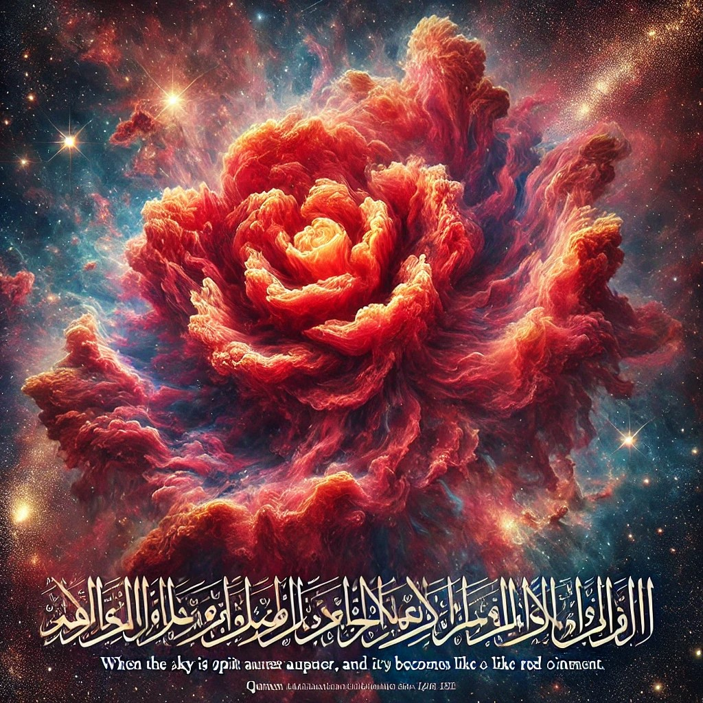
الإعجاز العلمي في انشقاق السماء يظهر جليًا في الإشارة
إلى أحد مشاهد يوم القيامة وما يمكن أن يرتبط به من مفاهيم كونية. يقول
الله تعالى:
"إِذَا السَّمَاءُ انشَقَّتْ"
(سورة الانشقاق: 1)
التأمل العلمي في "انشقاق السماء":
1. البنية الكونية للسماء
العلم الحديث يكشف أن السماء ليست فضاءً فارغًا، بل هي
مليئة بالبنية الكونية، مثل النجوم والمجرات والمادة المظلمة والطاقة
المظلمة. كلمة "انشقاق" قد تشير إلى انهيار هذه البنية التي نعرفها اليوم
نتيجة لقوى كونية أو تغيرات جذرية.
المراجع:
Silk, J. (2001). The Big Bang. Macmillan Science.
Rees, M. (2000). Just Six Numbers: The Deep Forces That Shape the
Universe. Basic Books.
الانفجارات الكونية
ظاهرة "انشقاق السماء" قد تكون مشابهة لما يشير إليه
العلماء من احتمالية حدوث تغييرات كارثية في الكون، مثل الانفجار العظيم
المعاكس (Big Crunch) أو تمزق النسيج الكوني
(Big Rip)، حيث يمكن أن تتمزق مكونات الكون نتيجة لتمدد
مستمر للطاقة المظلمة.
المرجع:
Caldwell, R. R., et al. (2003). "Phantom Energy and Cosmic Doomsday."
Physical Review Letters.
تأثيرات الجاذبية الضخمة
من الناحية العلمية، تشير الدراسات إلى أن التصادمات
بين المجرات أو الثقوب السوداء الهائلة قد تؤدي إلى انشقاقات كونية يمكن أن
تُحدث تغييرات جذرية في بنية السماء.
المرجع:
Begelman, M., Rees, M. (1998). "Gravity's Fatal Attraction: Black
Holes in the Universe." Cambridge University Press.
الجانب الإيماني:
الآية تحمل دلالات روحية تشير إلى قدرة الله المطلقة،
وأن النظام الكوني الذي نعرفه اليوم خاضع لإرادته. و"انشقاق السماء" يعبر
عن حدث عظيم يتجاوز الإدراك البشري، ليؤكد على مصير الخلق ويعزز الوعي
بقدرة الخالق.
الخلاصة:
الإعجاز العلمي في انشقاق السماء يكمن في التلميح إلى
إمكانية حدوث تغيرات جذرية في الكون، والتي تتوافق مع النظريات العلمية حول
مستقبل الكون، مما يُظهر التوافق بين النص القرآني والاكتشافات العلمية
الحديثة.
هذه الآية تقدم مشهدًا مذهلًا لما قد يحدث يوم القيامة،
وتتضمن إشارات إعجازية ترتبط بالحقائق العلمية المكتشفة حديثًا حول الكون
والظواهر الفلكية.
"فَكَانَتْ وَرْدَةً كَالدِّهَانِ": الوصف العلمي للسماء
أ. السدم الكونية
السدم (Nebulae) هي تشكيلات
كونية ضخمة من الغازات والغبار التي تأخذ أحيانًا أشكالًا شبيهة بالورود.
أشهر مثال على ذلك هو "سديم عين القط" و"سديم الوردة" (Rosette
Nebula)، الذي يُشبه الوردة بشكل مدهش.
هذه السدم تظهر بألوان متعددة، كالوردي والأحمر، نتيجة
لتفاعلات الغازات والإشعاعات العالية.
المرجع:
NASA Hubble Space Telescope: Images of the Rosette Nebula.
Tyson, N. D. (2007). Death by Black Hole: And Other Cosmic
Quandaries.
ب. انفجارات النجوم
(السوبرنوفا)
عند انفجار نجم ضخم في نهاية حياته
(Supernova)، يتناثر الغبار والغاز في الفضاء بطريقة تشكل
أشكالًا وردية. هذه الظاهرة قد تفسر المشهد الذي تشير إليه
الآية.
هذا الانفجار يمكن أن يظهر بألوان لامعة تُشبه الزيوت
(الدهان) الذائبة والمتداخلة.
المرجع:
Carroll, B. W., & Ostlie, D. A. (2017). An Introduction to Modern
Astrophysics.
NASA: Supernova Explosions and Their Remnants.
"كَالدِّهَانِ": تفسير اللون والحركة
الدهان يشير إلى الألوان المتداخلة والمتحركة، مثل
الطلاء المذاب. هذا يتطابق مع الصور الملتقطة للسدم والمجرات حيث تظهر
الألوان وكأنها في حالة تماوج وانصهار.
هذه الظاهرة تُظهر جمال الكون وتغير حالاته، مما يعزز
عظمة الخالق في تصوير المشهد.
المرجع:
Ferris, T. (2003). Seeing in the Dark: How Backyard Stargazers Are
Probing Deep Space and Guarding Earth from Interplanetary Peril.
الإعجاز العلمي في الآية
القرآن وصف شكلًا ومشهدًا للسماء يوم القيامة بدقة تتطابق
مع ما نشهده اليوم في التلسكوبات.
الأوصاف الكونية القرآنية تتسم بالدقة رغم أنها نزلت في
زمن لم تكن فيه أدوات لرصد السماء.
الخلاصة:
الآية الكريمة تتحدث عن مشهد كوني عظيم، سواء في يوم
القيامة أو في وصف ظواهر فلكية حالية مثل السدم أو انفجارات النجوم. هذه
الصورة تتفق مع الاكتشافات العلمية الحديثة، مما يظهر تداخل الإعجاز العلمي
مع المعاني الروحية.
"فَتَبَارَكَ اللَّهُ أَحْسَنُ الْخَالِقِينَ."
الإعجاز العلمي في انشقاق القمر س.
الإعجاز العلمي في انشقاق القمر يرتبط بالإشارة إلى حدث
مذكور في القرآن الكريم في سورة القمر
التفسير: تشير هذه الآية إلى أن الشمس تتحرك في مدار
محدد ولها مكان ستصل إليه في النهاية. هذا الوصف يتوافق مع الفهم العلمي
الحديث بأن الشمس تدور حول نفسها وتتحرك في مدار حول مركز
المجرة.
الإعجاز العلمي في النظام الكوني
المتوازن ط.
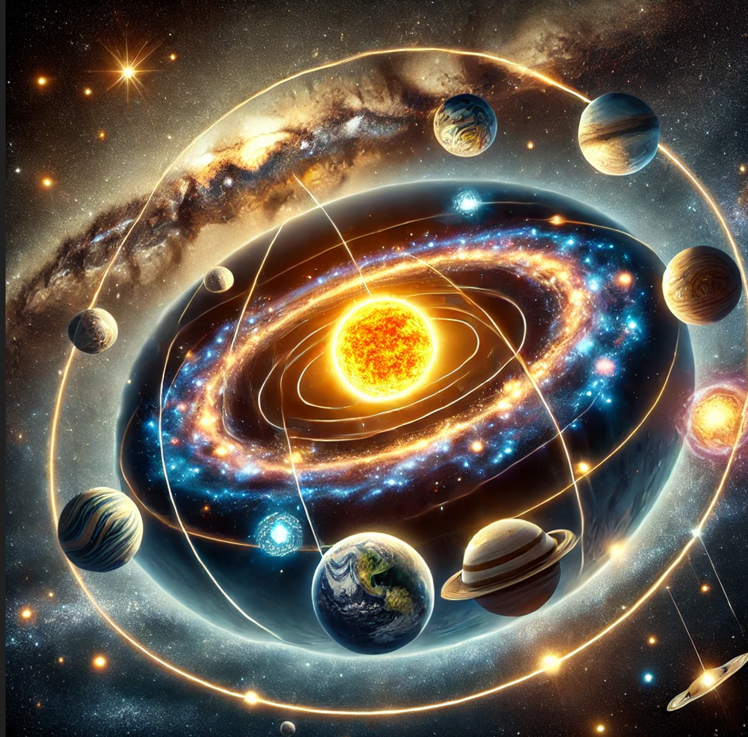
القرآن الكريم أشار إلى توازن الكون ونظامه الدقيق في
العديد من الآيات، وهو ما أثبته العلم الحديث من خلال دراسة قوانين
الفيزياء والكونيات. دعونا نستعرض أبرز مظاهر الإعجاز مع المراجع
الداعمة.
الآيات القرآنية التي تشير إلى النظام الكوني
المتوازن
الإشعاع الخلفي الكوني، المكتشف عام 1965، هو بقايا
الحرارة الناتجة عن مرحلة "الدخان" الكوني بعد الانفجار العظيم.
هذا الإشعاع يعتبر "بصمة" واضحة على المرحلة المبكرة
للكون.
مرجع علمي:
مقال: "The Discovery of Cosmic Microwave
Background Radiation" (Physical Review Letters).
كتاب: Big Bang: The Origin of the
Universe، تأليف: Simon Singh.
.الإعجاز العلمي في ذكر
"الدخان"
القرآن ذكر "الدخان" كمرحلة من مراحل تكوين الكون في
زمن لم يكن البشر يمتلكون أي معرفة عن هذه الظواهر.
الدقة العلمية في استخدام كلمة "دخان" لتوصيف حالة
المادة الكونية المبكرة تؤكد توافق القرآن مع الحقائق العلمية
الحديثة.
مرجع شرعي وعلمي:
كتاب: الإعجاز العلمي في القرآن الكريم، تأليف: زغلول
النجار.
مقال: "Quran and Modern Cosmology" (Islamic
Research Foundation).
خاتمة
تُبرز الآية الكريمة جانبًا من الإعجاز العلمي في القرآن
من خلال تطابقها مع النظريات العلمية الحديثة حول نشأة الكون. كلمة
"الدخان" تعبر بدقة عن حالة الكون في مراحله الأولى، مما يدل على أن هذا
الكتاب مصدره الخالق العليم
غ. الإعجاز العلمي في مواقع النجوم
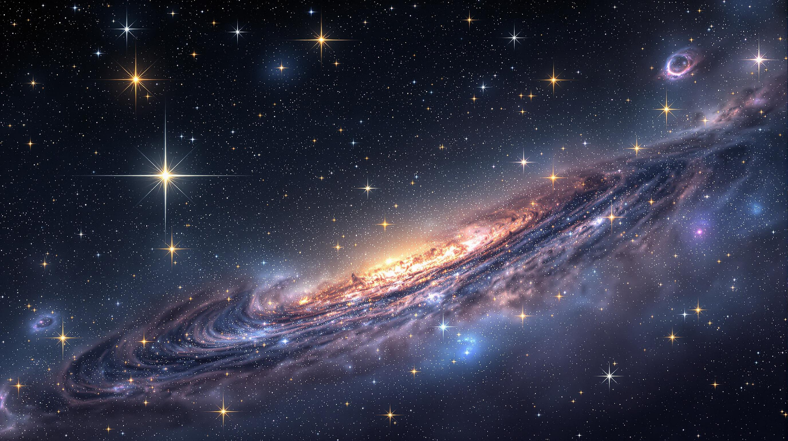
الآية الكريمة:
قال الله تعالى:
"فَلَا أُقْسِمُ بِمَوَاقِعِ النُّجُومِ * وَإِنَّهُ لَقَسَمٌ لَوْ تَعْلَمُونَ
عَظِيمٌ" (سورة الواقعة: 75-76)
التفسير اللغوي والبلاغي:
"فَلَا أُقْسِمُ":
صيغة "لا أقسم" تُستخدم في اللغة العربية للتأكيد على
عظمة الشيء الذي يُقسم به.
المعنى: الله يُقسم بمواقع النجوم، وهو قسم
عظيم.
مرجع: تفسير الطبري (جامع
البيان عن تأويل آي القرآن)، تفسير ابن كثير.
"بِمَوَاقِعِ النُّجُومِ":
مواقع النجوم قد تشير إلى:
أماكن سقوط النجوم عند غروبها.
أماكنها في السماء (مواقعها الفعلية).
المسافات الهائلة التي تفصل بين النجوم.
مرجع: تفسير القرطبي (الجامع
لأحكام القرآن)، تفسير السعدي.
"وَإِنَّهُ لَقَسَمٌ لَوْ تَعْلَمُونَ عَظِيمٌ":
الله يُبين أن القسم بمواقع النجوم عظيم جدًا، وهو أمر لا
يدركه البشر إلا إذا تأملوا في عظمة خلق الله.
مرجع: تفسير ابن عاشور (التحرير
والتنوير).
الإعجاز العلمي في الآية:
مواقع النجوم والمسافات
الهائلة:
العلم الحديث أثبت أن النجوم ليست في مواقعها التي
نراها بالعين المجردة، بل الضوء الذي يصل إلينا منها قد يكون قديمًا جدًا
بسبب المسافات الشاسعة التي تفصلنا عنها.
النجوم التي نراها قد تكون قد انتهت حياتها (انفجرت أو
تحولت إلى ثقوب سوداء)، وما نراه هو فقط الضوء الذي استغرق ملايين السنين
للوصول إلينا.
مرجع علمي: كتاب
Cosmos لعالم الفلك كارل ساجان، أبحاث ناسا حول
الضوء النجمي.
دقة مواقع النجوم:
مواقع النجوم في الكون دقيقة جدًا ومنظمة بشكل مذهل، مما
يضمن استقرار الكون.
هذا يتوافق مع قوله تعالى: "وَالسَّمَاءِ ذَاتِ الْحُبُكِ" (الذاريات:
7)، حيث تشير "الحبك" إلى النظام الدقيق في
السماء.
مرجع: تفسير ابن كثير،
كتاب The Elegant Universe لبراين
غرين.
النجوم كدليل على عظمة
الكون:
النجوم تُعتبر من أعظم مخلوقات الله في الكون، وهي دليل
على عظمة الخالق.
المسافات بين النجوم تُقاس بوحدات مثل "السنة الضوئية"،
وهي أرقام هائلة تعكس ضخامة الكون.
مرجع علمي: كتاب
Astrophysics for People in a Hurry لنيل ديغراس
تايسون.
الانفجارات النجمية (Supernova):
بعض العلماء يرون أن "مواقع النجوم" قد تشير أيضًا إلى
أماكن سقوط النجوم عند انتهاء حياتها (الانفجارات النجمية)، وهو ما لم يكن
معروفًا في زمن نزول القرآن.
مرجع علمي: أبحاث ناسا حول
السوبرنوفا، كتاب Death of Stars لنيكولاس
شيفر.
التأمل في القسم:
القسم بمواقع النجوم يُظهر عظمة الخالق وقدرته على خلق
هذا الكون الواسع بدقة متناهية.
هذه الآية تدعو الإنسان للتفكر في الكون والنجوم، وكيف
أن هذه المخلوقات الهائلة تشير إلى وجود خالق حكيم.
مرجع: تفسير السعدي،
كتاب The Quran and Modern Science للدكتور موريس بوكاي.
خلاصة:
الآية الكريمة "فَلَا أُقْسِمُ بِمَوَاقِعِ
النُّجُومِ" تحمل أبعادًا علمية وروحية عميقة. فهي تشير
إلى عظمة الكون ودقة تنظيمه، وهو ما أثبته العلم الحديث من خلال دراسة
النجوم ومواقعها والمسافات الهائلة التي تفصل بينها. هذا القسم العظيم يدعو
الإنسان إلى التفكر في خلق الله والإيمان بعظمته.
ق. الإعجاز العلمي في عظمة خلق السماوات
والارض
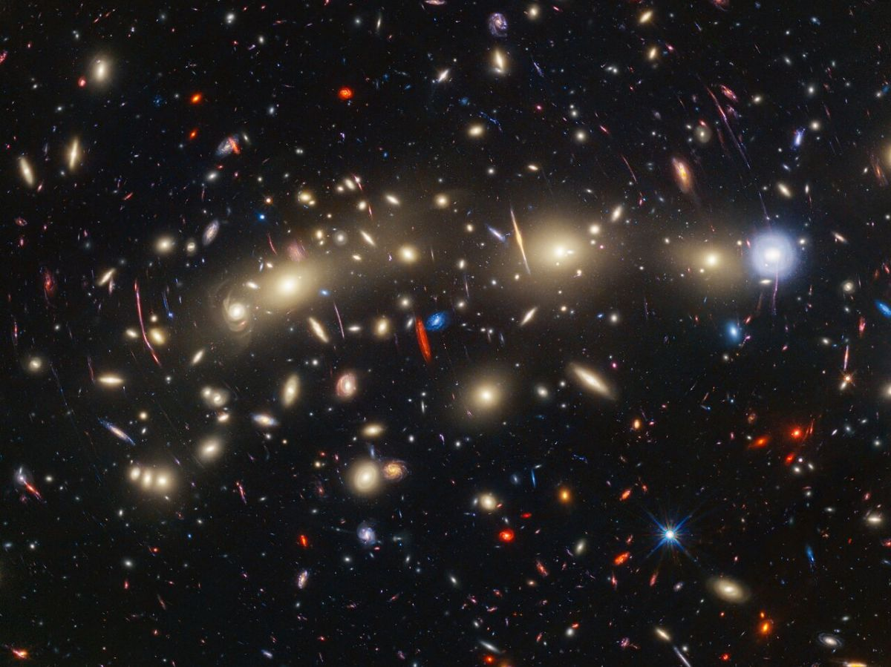
الإشارة إلى الإعجاز العلمي في خلق السماوات والأرض
مقارنة بخلق الناس تأتي من الآية القرآنية في سورة غافر، الآية 57، التي
تقول: "لَخَلْقُ السَّمَاوَاتِ وَالْأَرْضِ أَكْبَرُ مِنْ خَلْقِ النَّاسِ وَلَكِنَّ أَكْثَرَ النَّاسِ لَا
يَعْلَمُونَ". هذه الآية تشير إلى أن خلق الكون بأسره، بما في ذلك
السماوات والأرض، هو أمر أعظم وأكبر من خلق الإنسان، وهو ما يمكن تفسيره من
خلال عدة جوانب علمية:
.الحجم والتعقيد
السماوات والأرض: تشمل الكون بأكمله، بما في ذلك المجرات، النجوم، الكواكب،
والظواهر الكونية مثل الثقوب السوداء والنجوم النيوترونية. الحجم الهائل
والتعقيد الكبير للكون يجعلان من خلقه أمرًا يفوق الإدراك
البشري.
الإنسان: مع
أن الإنسان يمثل تعقيدًا بيولوجيًا مذهلاً على مستوى الخلايا والأعضاء
والأنظمة الفسيولوجية، إلا أنه يظل جزءًا صغيرًا جدًا مقارنة
بالكون.
.الطاقة والموارد
السماوات والأرض: تكوين الكون يتطلب طاقة هائلة وعمليات فيزيائية معقدة تشمل
الانفجار العظيم وتكوين العناصر في نوى النجوم والانفجارات العظمى
(سوبرنوفا).
الإنسان: خلق
الإنسان، بينما يتطلب أيضًا عمليات معقدة مثل الانقسام الخلوي والتطور
الجيني، لكنه يستخدم طاقة وموارد أقل بكثير مقارنة بخلق الكون.
.الأهمية النسبية
السماوات والأرض: توفر البيئة اللازمة لوجود الحياة وتحافظ على التوازن
الكوني.
الإنسان: يعتبر جزءًا من هذا النظام الكوني، ولكنه لا يؤثر على الكون
بأكمله بالطريقة نفسها التي يؤثر بها الكون على الإنسان.
.الإعجاز العلمي
الآية تعكس معرفة عميقة بأولويات ومقاييس الكون التي لم
تكن معروفة للبشر في ذلك الوقت. تشير إلى أن القرآن يقدم رؤية شاملة تتجاوز
الفهم البشري العادي، مما يعزز الإيمان بأن هذه النصوص تحمل معاني أعمق مما
يمكن فهمه بالعلم فقط.
هذه الآية تدعو الناس إلى التأمل في عظمة الكون ومكانة
الإنسان فيه، مما يعزز الشعور بالتواضع والإعجاب بالخلق الإلهي.
ك. كروية الأرض
يعكس دقة بالغة في وصف: (سورة
الزمر: 5) "يُكَوِّرُ اللَّيْلَ عَلَى النَّهَارِ وَيُكَوِّرُ
النَّهَارَ عَلَى اللَّيْلِ" قوله تعالى ظاهرة كونية
تتعلق بدورة الليل والنهار. عندما نتأمل في الكلمة "يُكَوِّرُ"، نجد أن فيها
إعجازًا علميًا مذهلاً. سنناقش ذلك في ضوء الحقائق العلمية
والمراجع.
.معنى كلمة "يُكَوِّرُ" في
اللغة
"يُكَوِّرُ" مأخوذة
من "كَوَّرَ"، أي جعل الشيء على شكل كرة، أو لفَّه كالعمامة. هذا المعنى يشير إلى
التدوير أو التغليف المستمر.
هذا التوصيف يتطابق مع الطريقة التي يتعاقب فيها الليل
والنهار على سطح الأرض.
.الإعجاز العلمي في
الآية
أ.وصف كرويّة
الأرض:
تشير الكلمة إلى أن الأرض كروية الشكل، لأن تعاقب الليل
والنهار لا يحدث إلا إذا كانت الأرض كروية. الضوء يسطع على نصف الكرة
الأرضية بينما يبقى النصف الآخر مظلمًا.
في العصور القديمة، كان الاعتقاد السائد أن الأرض
مسطحة، ولكن القرآن أشار إلى الحقيقة الكونية قبل اكتشافها
بقرون.
ب.استمرارية
التعاقب:
لفظ "يُكَوِّرُ" يصف كيفية تغطية الليل للنهار والعكس،
بطريقة تدريجية ومستمرة، تمامًا كما يحدث في الواقع.
هذا ينسجم مع دوران الأرض حول محورها، مما يؤدي إلى
تعاقب الليل والنهار بطريقة سلسة.
ج.حركة
الأرض:
إذا نظرنا إلى وصف "يُكَوِّرُ"، نجد فيه إشارة غير مباشرة
إلى حركة الأرض ودورانها، حيث إن هذا التداخل بين الليل والنهار يعتمد على
دوران الأرض حول محورها وحول الشمس.
.الدلالات العلمية
الحديثة
تعاقب الليل والنهار: يحدث بسبب دوران الأرض حول محورها من الغرب إلى
الشرق.
الشكل الكروي للأرض: تم إثباته علميًا من خلال الصور الفضائية والملاحظات الفلكية، وهو
شرط أساسي لتعاقب الليل والنهار بطريقة "تكوير".
.المراجع العلمية
والشرعية
أ.المراجع
الشرعية:
القرطبي: ذكر
في تفسيره أن التكوير يعني تغطية الليل للنهار بشكل متداخل
ومتتابع.
ابن كثير: أشار إلى أن التكوير يدل على إدخال أحدهما على الآخر
بتتابع.
ب.المراجع
العلمية:
علم الفلك الحديث: يثبت أن كروية الأرض هي السبب في الظواهر الطبيعية مثل تعاقب
الليل والنهار (راجع كتاب "Introduction to
Astronomy").
صور الأقمار الصناعية: أكدت بالدلائل البصرية كروية الأرض وطبيعة دورانها.
ج.أبحاث علمية
معاصرة:
تقارير ناسا عن حركة الأرض ودورانها حول محورها تؤكد
التعاقب التدريجي للضوء والظلام، مما يدعم وصف "يُكَوِّرُ".
خلاصة
الآية الكريمة تقدم وصفًا دقيقًا لكروية الأرض وتعاقب
الليل والنهار، وهو ما أكده العلم الحديث بعد قرون. استخدام لفظ "يُكَوِّرُ"
يبرز إعجازًا لغويًا وعلميًا في القرآن الكريم.
ل. الاعجاز في رفع السماوات بغير عمد :
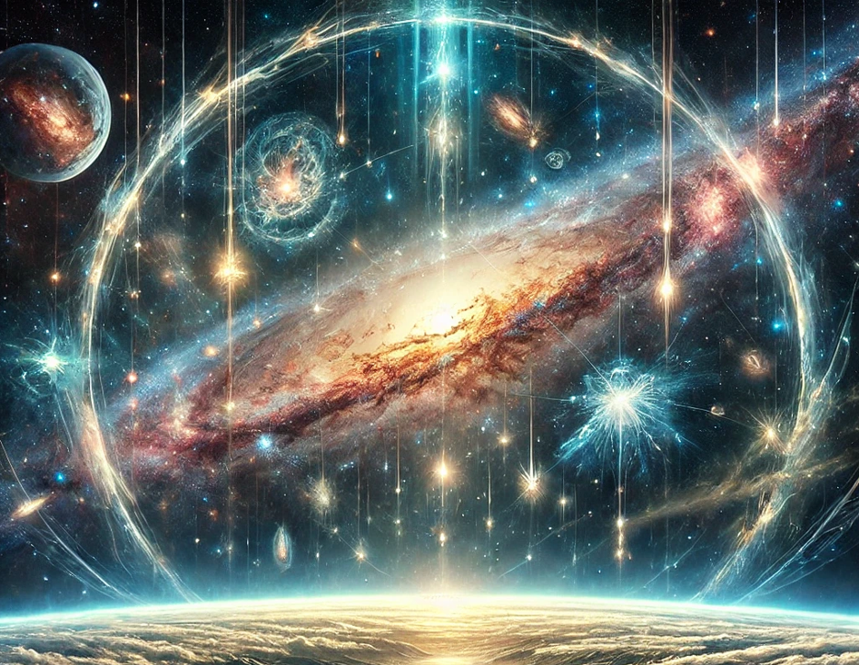
قوله تعالى: "اللَّهُ الَّذِي
رَفَعَ السَّمَاوَاتِ بِغَيْرِ عَمَدٍ تَرَوْنَهَا" (سورة
الرعد: 2) يمثل إعجازًا علميًا ودقيقًا، يشير إلى نظام الكون وقوانينه التي
تدعم استقرار السماوات والأجرام دون دعائم مرئية. لفهم هذا الإعجاز، يمكننا
تحليل الآية من عدة زوايا علمية ولغوية.
.المعنى اللغوي لـ "بغير عمد
ترونها"
"بغير عمد": يعني بلا أعمدة تقليدية كما نفهمها في البنية
المعمارية.
"ترونها": تفيد أن العمد موجودة، ولكنها غير مرئية للعين
المجردة.
.الإعجاز العلمي في
الآية
أ.الاستقرار الكوني
والجاذبية:
العلم الحديث يكشف أن استقرار السماوات والأجرام (مثل
الكواكب والنجوم) يتم نتيجة الجاذبية، وهي قوة غير مرئية
تعمل كأعمدة تدعم استقرار الأجرام السماوية.
قوانين الجاذبية التي وضعها نيوتن وأكدها أينشتاين تفسر
كيف تبقى الأجرام معلقة في الفضاء دون أعمدة مادية.
ب.القوى الكونية غير
المرئية:
هناك قوى أخرى غير مرئية تدعم النظام الكوني،
مثل:
القوة الكهرومغناطيسية: تؤثر في حركة الجسيمات المشحونة وتوازنها.
القوى النووية الضعيفة
والقوية: تعمل على استقرار الذرات داخل
النجوم والكواكب.
هذه القوى تعمل بمثابة "العمد غير المرئية"، مما يجعل
استقرار الكون متناسقًا.
ج.الفراغ الكوني
والبنية الكونية:
الكون ليس فراغًا كاملاً، بل يحتوي على شبكة معقدة من
المادة والطاقة المظلمة، تُعرف بـ "شبكة
الكون العنكبوتية"، والتي تعمل على ربط
المجرات وتحافظ على اتساقها.
هذه الشبكة غير مرئية للعين المجردة، ولكنها تؤدي دورًا
مشابهًا للأعمدة.
.التفسير العلمي والشرعي
أ.التفسير
الشرعي:
الطبري وابن كثير: أشاروا إلى أن "بغير عمد ترونها" قد تعني أن السماوات مستندة على
قدرة الله تعالى وحكمته، وليس على أعمدة مادية.
البعض يرى أن "ترونها" تشير إلى أن العمد موجودة لكنها
غير مرئية، وهو ما يتوافق مع الاكتشافات العلمية الحديثة.
ب.التفسير
العلمي:
علماء الفيزياء الفلكية يؤكدون أن استقرار الأجرام
السماوية يعتمد على توازن القوى مثل الجاذبية والطاقة المظلمة، التي تعمل
كأعمدة غير مرئية تحافظ على النظام الكوني.
.دلائل من العلم الحديث
قانون الجاذبية الكونية
(نيوتن):
الجاذبية تعمل كقوة شد تربط بين الأجرام السماوية
وتمنعها من التشتت.
نظرية النسبية العامة
(أينشتاين):
أوضحت أن الكواكب والنجوم تتحرك في مسارات محددة بسبب
انحناء الزمكان، وهذا يشبه الأعمدة التي تحكم استقرارها.
صور الفضاء والتلسكوبات
الحديثة:
الصور التي التقطتها التلسكوبات مثل "هابل" تُظهر
التوازن الدقيق بين المجرات والنجوم دون أي أعمدة مادية.
.المراجع العلمية
والشرعية
أ.المراجع
الشرعية:
تفسير ابن كثير: "رفعت السماوات على غير عمد مرئية أو غير موجودة، وذلك من قدرة
الله".
تفسير الطبري: يذكر أن رفع السماوات بغير عمد دليل على قدرة الله
وتدبيره.
ب.المراجع
العلمية:
كتب الفلك مثل "Cosmos" لكارل ساغان، تشرح القوى الكونية غير المرئية.
مقالات عن الجاذبية والطاقة المظلمة في مجلات علمية
مثل Nature وScientific
American.
خلاصة
الآية الكريمة تجمع بين الحقيقة الشرعية
والعلمية:
من الناحية الشرعية، تشير إلى قدرة الله
تعالى.
من الناحية العلمية، توضح الآية مفهوم القوى غير
المرئية (مثل الجاذبية) التي تدعم استقرار الكون.